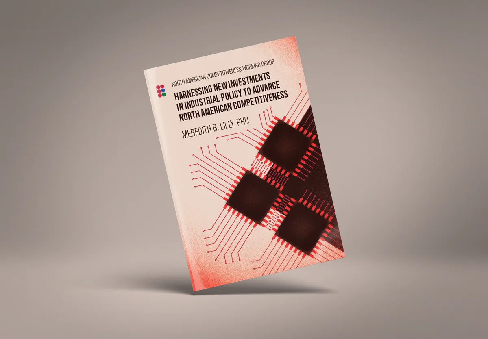

NACWG — White Paper, Identity & Collateral NACWG — Documento, Identidad y Material
Logo, typography, full report layout, custom orthographic cartography, and identity collateral for a trinational policy working group. Logo, tipografía, maquetación del reporte, cartografía ortográfica personalizada y material de identidad para un grupo de trabajo trinacional.
An 80-hour engagement building a trinational identity, four custom data figures, and a full report layout for a policy working group that had to publish in academic and government contexts simultaneously.
Un proyecto de 80 horas construyendo una identidad trinacional, cuatro figuras de datos personalizadas y la maquetación completa de un reporte para un grupo de trabajo que tenía que publicar en contextos académicos y gubernamentales simultáneamente.
- scopealcance
- 80+ hour engagementProyecto de 80+ horas
- serviceservicio
- Identity, typography, custom cartography, report layout, member collateralIdentidad, tipografía, cartografía personalizada, maquetación del reporte, material para miembros
- deliverablesentregables
- Logo, palette, typography rules, four custom data figures, full report layout, identity collateralLogo, paleta, reglas tipográficas, cuatro figuras de datos personalizadas, maquetación completa, material de identidad
- timelinefechas
- June 2024Junio de 2024

Full write-up for this project lands here as soon as the body copy is approved. The BLUF and specs above already tell the bottom-line story.
El texto completo del proyecto aparecerá aquí en cuanto la copia esté aprobada. El BLUF y las especificaciones arriba ya cuentan la historia esencial.